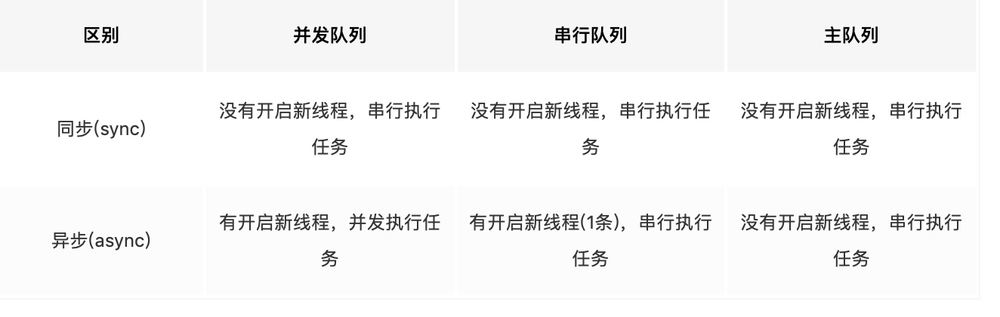

任务和队列
任务： 就是执行操作的意思
执行任务有两种方式:同步和异步执行，区别在“是否等待队列中的任务结束，以及是否能开启新线程”
异步执行，虽然有开启新线程能力，但是并不一定开启新线程。和任务的队列类型有关
队列:执行任务的等待队列，用来存放任务；FIFO；
两种队列:
- 串行队列：每次只有一个任务执行（只在一个线程中）
- 并行队列：多个任务并发执行（可以开启多个线程，同时执行任务）
并发队列只在异步函数中才有效
队列queue
队列分为两种
DISPATCH_QUEUE_SERIAL串行队列DISPATCH_QUEUE_CONCURRENT 并行队列
创建自定义队列:
dispatch_queue_t dispatch_queue_create(const char *label, dispatch_queue_attr_t attr);
//label: 字符串类型 队列的唯一标识符，方便进行调试，推荐使用com.example.myqueue，可以为null
//attr 指定要创建的队列类型 串行队列DISPATCH_QUEUE_SERIAL或者NULL ，并行队列DISPATCH_QUEUE_CONCURRENT
在不使用ARC时，在不再需要使用该队列的地方调用dispatch_release
任何添加到该queue的待处理block都会持有对queue的引用，因此直到所有的block完成，该queue才会释放
使用dispatch_suspend，dispatch_resume，dispatch_set_context来控制此队列
特殊的串行队列： 主队列
dispatch_queue_main_t dispatch_get_main_queue(void);
由系统自动创建的和主线程相关联
常用的将事件提交主线程执行方法：
- dispatch_main
- UIApplicationMain
- CFRunLoopRef
对此队列调用dispatch_suspend，dispatch_resume，dispatch_set_context不起作用
全局并发队列
系统定义的并发队列 可以指定quality-of-service level
dispatch_queue_global_t dispatch_get_global_queue(long identifier, unsigned long flags);
__QOS_ENUM(qos_class, unsigned int,
QOS_CLASS_USER_INTERACTIVE
__QOS_CLASS_AVAILABLE(macos(10.10), ios(8.0)) = 0x21,
QOS_CLASS_USER_INITIATED //DISPATCH_QUEUE_PRIORITY_HIGH
__QOS_CLASS_AVAILABLE(macos(10.10), ios(8.0)) = 0x19,
QOS_CLASS_DEFAULT //DISPATCH_QUEUE_PRIORITY_DEFAULT
__QOS_CLASS_AVAILABLE(macos(10.10), ios(8.0)) = 0x15,
QOS_CLASS_UTILITY //DISPATCH_QUEUE_PRIORITY_LOW
__QOS_CLASS_AVAILABLE(macos(10.10), ios(8.0)) = 0x11,
QOS_CLASS_BACKGROUND //DISPATCH_QUEUE_PRIORITY_BACKGROUND
__QOS_CLASS_AVAILABLE(macos(10.10), ios(8.0)) = 0x09,
QOS_CLASS_UNSPECIFIED
__QOS_CLASS_AVAILABLE(macos(10.10), ios(8.0)) = 0x00,
);
//identifier：指定quality-of-service level 即该队列中任务执行的优先级，可以指定该值为上面你的枚举；为了兼容ios(8.0)前，可以使用DIAPTCH_QUEUE_PRIIRUTY_...
//flag: 备用参数，指定为0
对此队列调用dispatch_suspend，dispatch_resume，dispatch_set_context不起作用
设置队列
void dispatch_set_target_queue(dispatch_object_t object, dispatch_queue_t queue);
如果处于串行队列中的block操作，提交到的目标队列也是另外一个串行队列，那么该block不会与任何目标队列为该串行队列的block并发执行；我们常用此方法将某些队列中任务设置到另外串行队列中执行，来达到让若干个队列串行执行目的
object会继承targetQueue的优先级，因此可以用dispatch_get_global_queue设置自己创建的队列优先级
设置queue的targetQueue 并不是将queue的block全部放到tartgetQueue中执行，而是block要受到两个queue共同约束，queue按自己的顺序将要执行的block放到targetqueue，再按照targetQueue顺序执行
创建任务
dispatch_async
void dispatch_async(dispatch_queue_t queue, dispatch_block_t block);
//queue 目标队列，被系统retain直到block完成释放，不能为空
//block 执行的操； 这个函数帮助调用者执行 Block_copy和Block_release；不能为空
提交一个异步执行的block到queue中，并立即返回，不会等待block执行；
目标队列会决定和其他block 串行或者并发处理
dispatch_sync
提交一个同步执行的block到queue中，并等待block执行完成才返回
void dispatch_sync(dispatch_queue_t queue, dispatch_block_t block);
与dispatch_async不同，因为是同步执行的，系统并不会对目标队列retain,也不会对该Block_copy
以当前队列为目标队列，会造成死锁
dispatch_async_f
异步执行一个函数，并立即返回而不等函数执行完成
void dispatch_async_f(dispatch_queue_t queue, void *context, dispatch_function_t work);
//context 传递给函数的参数
//work 函数指针
dispatch_sync_f
与dispatch_async_f同理 只是同步执行
总结

系统根据queue情况 决定将queue中的任务放在哪个线程中执行，所以有可能多个queue在同一个线程，或者同一个queue在不同线程
其他方法
获取queue label名称
const char * dispatch_queue_get_label(dispatch_queue_t queue);
获取queue的名称
传入DISPATCH_CURRENT_QUEUE_LABEL来获取当前queue的名称
设定queue与特定值关联
dispatch_queue_set_specific
将数据context data与queue相关联
在queue中执行的block可以通过dispatch_get_specific获取到该值,否则可以使用dispatch_queue_get_specific获取到该值
void dispatch_queue_set_specific(dispatch_queue_t queue, const void *key, void *context, dispatch_function_t destructor);
//key：用来和contenxData关联的标识 为一个指针，推荐使用静态变量而不都是字符串常量 不能为NULL
//context： 与key关联的data 不能为空
//destructor：用来release contextdata的函数，可以为空
queue可以用多个key 关联多个值
dispatch_queue_get_specific && dispatch_get_specific
获取与queue关联的值
//获取与当前queue关联的值，常用于queue的执行的block内部 直接获取到关联值
void * dispatch_get_specific(const void *key);
//获取和指定queue相关联的值
void * dispatch_queue_get_specific(dispatch_queue_t queue, const void *key);